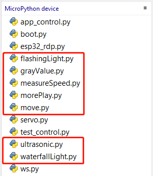
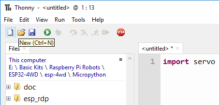
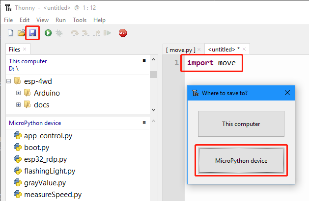
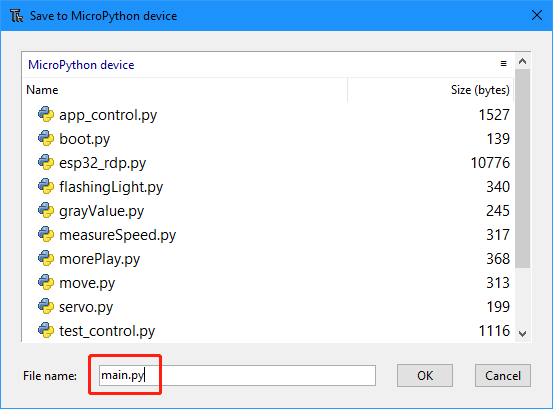

Code Control¶
In this chapter, we are provided with method of arduino control. Open esp-4wdMicropythonexample, you can see a total of 7 code examples, you can use these 7 examples to quickly get started using the ESP-4WD Car.
{kind=link}
move¶
Run the move.ino file, the car will go forward 1s, go backward 1s, turn left 1s, turn right 1s at 30% speed, and finally stop.
import esp32_rdp as car
import time
def main():
car.move("forward", 30)
time.sleep(1)
car.move("backward", 30)
time.sleep(1)
car.move("left", 30)
time.sleep(1)
car.move("right", 30)
time.sleep(1)
car.move("stop")
try:
main()
finally:
car.move("stop")
ultrasonic¶
Run ultrasonic.py, the Shell window will always print the distance value read by the ultrasonic module.
import esp32_rdp as car
import time
ult = car.Ultrasonic(13,12)
def main():
while True:
distance = ult.get_distance()
print('distance:%0.2f' % distance)
time.sleep(0.1)
main()
grayValue¶
Run grayValue.py, the Shell window will always print the reading value of the grayscale sensor.
import esp32_rdp as car
import time
grayValue = []
def main():
while True:
grayValue = car.get_grayscale_list()
print('grayValue: %d %d %d' %(grayValue[0],grayValue[1],grayValue[2]))
time.sleep(1)
main()
flashingLight¶
Run flashingLight.py, the RGB light under the car flashes every 0.5 seconds and changes color every time it flashes.
import esp32_rdp as car
import random
import time
def main():
while True:
color = [random.randint(0,255),random.randint(0,255),random.randint(0,255)]
car.set_light_color(color)
time.sleep(0.5)
car.set_light_off()
time.sleep(0.5)
try:
main()
finally:
car.set_light_off()
waterfallLight¶
Run waterfallLight.py, the RGB lights under the car will gradually turn on from the first to the twenty-fourth, and then turn off from the end to the middle. After that, the RGB lights will turn on from the twenty-fourth to the first, and then turn off from the end to the middle.
import esp32_rdp as car
import random
import time
def main():
while True:
color = [random.randint(0,255),random.randint(0,255),random.randint(0,255)]
noColor = []
for i in range(24):
car.set_num_color(i,color)
time.sleep_ms(20)
for i in range(23,11,-1):
j = 23-i
car.set_num_color(i, noColor)
car.set_num_color(j, noColor)
time.sleep_ms(40)
for i in range(23,0,-1):
car.set_num_color(i,color)
time.sleep_ms(20)
for i in range(23,11,-1):
j = 23-i
car.set_num_color(i,noColor)
car.set_num_color(j,noColor)
time.sleep_ms(40)
try:
main()
finally:
car.set_light_off()
The sentence to light up the LED is car.set_num_color(i, red, green, blue); the first parameter is the number of the light, and the last three parameters are the RGB value. For example, car.set_num_color(4,255,0,0) means to make the No. 4 LED light up in red.

measureSpeed¶
Run measureSpeed.py, 小车将会以随机速度前进一秒，并把Photo-interrupter Module检测到的速度打印在Shell窗口。
import esp32_rdp as car
import random
import time
speed = car.Speed(26, 25)
def main():
while True:
car.move("forward",random.randint(0,100))
time.sleep(1)
carSpeed = speed.get_speed()
print('distance:%d' % carSpeed)
try:
main()
finally:
car.move("stop")
morePlay¶
Run 7.morePlay.py, this example provides 4 ways to use ESP-4WD Car. You can switch between different modes by modifying the value of the mode variable.
import esp32_rdp as car
mode = 1
def main():
while True:
global mode
if mode == 1:
car.avoid(40,30)
elif mode == 2:
car.follow(40,30)
elif mode == 3:
car.is_on_edge(110)
elif mode == 4:
car.track_line(400,50)
try:
main()
finally:
car.move("stop")
avoid
Modify the value of the mode variable to 1. ESP-4WD Car will advance at 30% speed and turn right to avoid obstacles ahead。
follow
Modify the value of the mode variable to 2. ESP-4WD Car will move forward at 30% speed and automatically follow objects within 40cm in front.
cliff detection
Modify the value of the mode variable to 3. When ESP-4WD Car detects a cliff (a place where the grayscale sensor’s detection value is below 110), it will retreat a certain distance.
track_line
Modify the value of the mode variable to 4. The ESP-4WD Car moves along the black line on the white ground (where the grayscale sensor detection value is below 400).
开机自启¶
由于前面提供的7个示例在断电重启后，不会再重新运行。所以在这里，我们提供让python程序开机自启动的方法。
点击左上角的新建文件图标
{kind=link}
在新建的文件中输入
import move
点击左上角的保存按钮，在弹出的选项框中选择**MicroPython device**。
{kind=link}
将文件命名为main.py（如果你用了其他命名，将导致无法开机自启）
{kind=link}
运行main.py，小车将会执行move.py文件里的代码。并且在下次重启小车后，代码仍然有效。 如果你想要运行其他示例代码，只需要修改main.py的内容，例如你想要每次上电是运行waterfallLight.py的代码，则输入
import waterfallLight